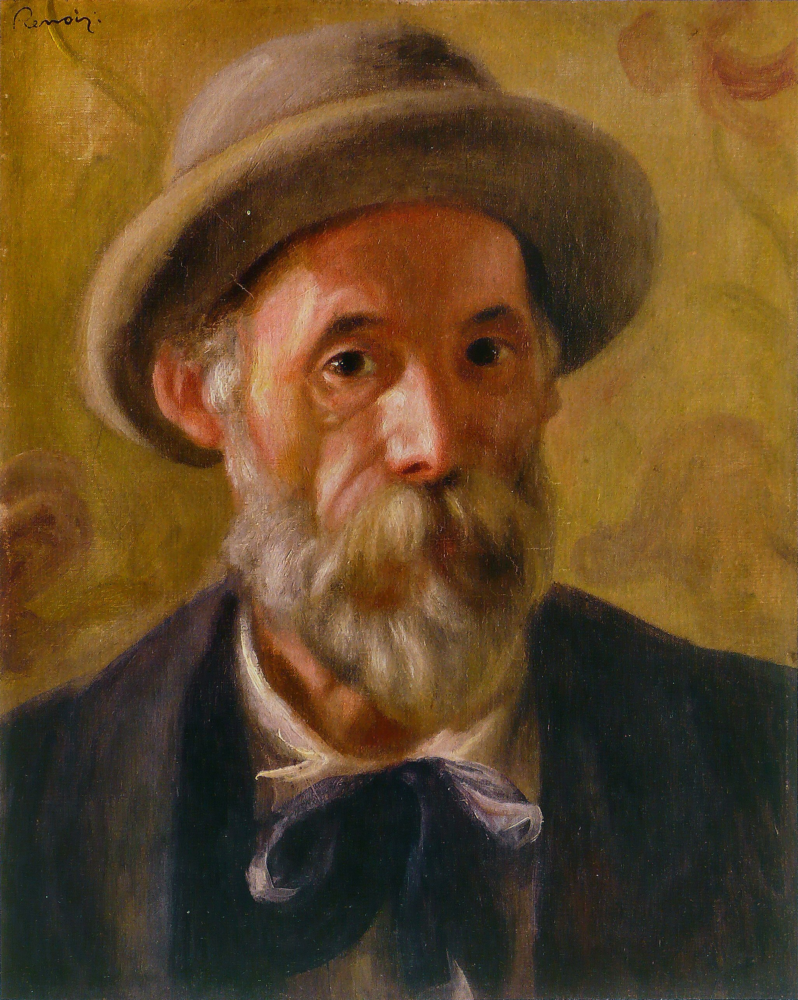

Más impresionistas en la historia
Claude Monet fue el pionero de este movimiento, pero otros artistas claves fueron:
Pierre-August Renoir:
Pierre-Auguste Renoir, conocido por sus escenas alegres de la vida social, los desnudos
femeninos y el uso de la luz difusa. Su trabajo constaba en la figura humana y la belleza de
la vida, a diferencia de otros impresionistas que se enfocaban en los paisajes.
Desde su infancia
demostró talento para las artes, una vez aprobado su ingreso a Bellas Artes, fue
un sobresaliente de la escuela, lugar donde conoció a sus compañeros de profesión, como Claude
Monet, y de este nuevo movimiento artístico que llevaron a cabo. Con quienes lucharon hacer
visible al impresionismo como una forma de pintar.
Édouard Manet:
Édouard Manet, uno de los precursores del impresionismo, fue un pintor y grabador francés.
Aunque su carrera no fue tan extensa, ya que falleció a la edad de 51 años, su presencia en el
desarrollo
del impresionismo fue de gran importancia.
Es reconocido por su
influencia en el
arte moderno, y su trabajo marcó una transición entre el realismo y el impresionismo. Cuyas
obras combinaban elementos modernos con la técnica clásica.
También, a diferencia de
Claude
Monet, Édouard Manet se dedicaba a retratar la vida cotidiana.
No se consideraba a sí mismo realmente como impresionista, prefería más el término como artista
independiente, también fuera del límite académico.
Edgar Degas:
También fue un pintor, escultor grabador francés. Conocido principalmente por sus obras que
retratan la vida social parisina, especialmente por sus célebres cuadros de bailarinas y escenas
de mujeres en momentos íntimos.
Degas es considerado un maestro del pastel y tuvo una gran
obsesión por la danza, mejor dicho, por las bailarinas. Se lo ha vinculado al impresionismo,
pero realmente tampoco se consideraba un impresionista. Ya que sus ideales en cuestión a su arte
eran las obras acabadas y enfocadas en los pequeños detalles. Dedicó la mayor parte de su
estudio al cuerpo humano. Acabó sus días totalmente ciego, y al igual que a la mayoría de
artistas, solo fue reconocido después de su muerte.
Camille Pissarro:
Uno de los más consistentes defensores del impresionismo, conocido por sus paisajes rurales y
urbanos. Considerado también como el padre del impresionismo y co-fundador del grupo de
impresionistas.
Su influencia se vio ligada tanto al impresionismo como al
neo-impresionismo.
Como es de esperarse, su enfoque asrtístico en sus obras era puramente impresionista, captando
el momento, la impresión de la imagen, la luz, el color, y la atmósfera tal y como se podía
apreciar. Su dedicación constó de plamar la Francia rural. También fue un importante mentor, con
disípulos como Paul Gauguin.
Berthe Morisot:
Una de las pocas mujeres impresionistas, cuyo trabajo se destacó en escenas íntimas y
familiares. Nació en una familia de la alta burguesía que la educó en las artes, lo que influyó
en su carrera artística.
Morisot prefería pintar al aire libre, enfocándose en escenas de la
vida diaria y la intimidad del hogar, aunque su trabajo como mujer burguesa tuvo limitaciones.
Siendo mujer y no lograr ingresar a la escuela por esta razón, Berthe pintaba lo que veía. Pero
su
estilo era mucho
más propio. Logró hasta vender más cuadros que Monet y Pissarro. Aunque el sistema patriarcal no
quería que una mujer tuviera este tipo de reconocimiento, así que fue tachada como una simple
artista femenina que solo pintaba eventos hogareños. Hasta hoy, poco se habla de ella en la
historia del arte.